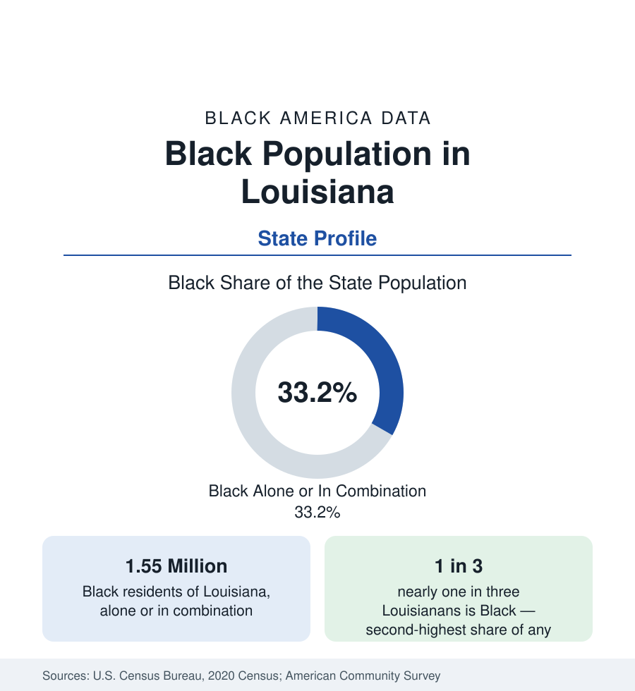

Black Census
Black Population in Louisiana: One in Three, Rooted Deep
About 1.55 million Black Louisianans — nearly one in three residents — from New Orleans' Creole parishes to the northern cotton country. The census profile.

Louisiana holds about 1.55 million Black residents — Black alone or in combination — nearly one in three of its people, with Black alone at about 1.46 million, or 31 percent. Only Mississippi records a higher Black share among the states, and no state's Black culture is more distinctly its own: Louisiana's Black population descends from French and Spanish colonial foundations, from a famous free people of color class in New Orleans, from the sugar parishes' brutal plantation economy, and from West African traditions preserved with unusual depth. This article profiles the population in the census data.
Three Louisianas
The state's Black geography divides into three regions. In the south, New Orleans and the river parishes — the old sugar country between the city and Baton Rouge — hold the historic core, where plantation parishes such as St. John the Baptist, St. Charles, and Iberville record Black shares at or above the state figure amid the chemical-industry corridor. Acadiana, the Cajun country of the southwest centered on Lafayette, holds a large Black population that shares the region's French language and Catholic culture — the Creole country whose music, zydeco, is the Black French tradition's gift. In the north, the cotton parishes of the Delta fringe — East Carroll, Madison, and Tensas among them — record Black majorities and the state's hardest economic data, in the Mississippi Delta's southern extension; Shreveport and Monroe anchor the region's cities, both with Black shares around or above half within their limits.
Baton Rouge and the Urban Map
Baton Rouge, the capital, is a majority-Black city — roughly 55 percent within its limits — and home to Southern University, the nation's largest historically Black university system flagship by the system's accounting, and to a state-government and petrochemical workforce. New Orleans, profiled in full in the cities section, is the state's largest Black population center. Together with Shreveport and the suburban rings of each, the urban parishes hold the large majority of Black Louisianans while the rural parishes hold the highest shares — the recurring Southern pattern, in a state whose rural Black culture, from the Delta blues fringe to the Creole trail-ride country, retains an outsized influence on the whole.
Roots: The Most Layered Descent in America
The ancestry data record Louisiana's uniqueness. Colonial Louisiana's Black population was built under French and Spanish law, which sustained in New Orleans a substantial class of free people of color — property holders, artisans, and militia members — generations before emancipation, whose descendants, the Creoles of color, form a distinct stratum in the city's data to this day. The domestic slave trade then made New Orleans its greatest market, importing enslaved people from across the South into the sugar and cotton parishes. The result is a Black population of extraordinary internal layering: Creole and Anglo, Catholic and Baptist, French-speaking elders within living memory in the southwest parishes, and family continuities in the river parishes extending to the colonial period.
Composition and Change
The state's Black indicators record difficulty alongside depth: income and poverty figures at the hard end of the national distributions, health outcomes that anchor the difficult end of this reference's public health tables, and an age structure marked by the departure of young adults to Texas — Houston above all, a few hours west, whose Black population includes one of the largest Louisiana-born communities in the nation. Katrina's displacement, treated in the New Orleans profile, was the century's sharpest single event in the state's demographic record, and its partial reversal — return migration across the following decade — is the estimates program's continuing story.
Reading the Louisiana Numbers
Louisiana's profile completes the Deep South sequence of this section — Mississippi, Alabama, South Carolina, Georgia before it — and the comparison is the lesson: the five states share the plantation foundation and diverge in everything since, in growth, in institutions, and in the data's present tense. Louisiana's figures should be read with its layers in mind: the state average blends a Creole metropolis, a French southwest, and a Delta north that resemble three different regions of Black America, because historically they were.
The parish profiles beneath this state account carry the local figures for the river parishes, Acadiana, and the northern tier.
More in Black Census
The Black Population of the United States: Size, Definitions, and Distribution
The Black population of the United States totals 52.8 million — 15.4 percent of the nation. How the Census Bureau defines and counts the population, and where it lives.
Black Median Household Income in the United States
Black median household income stands at $56,490 in the Census Bureau's annual income report — how the figure is measured, how it compares, and what drives it.
The Black Poverty Rate: Levels, Children, and the Long Trend
The official Black poverty rate is 17.1 percent — against 11.1 percent nationally and 7.7 percent for non-Hispanic White Americans. How poverty is measured and what the data show.
Source: U.S. Census Bureau, 2020 Census; American Community Survey; Population Estimates Program.